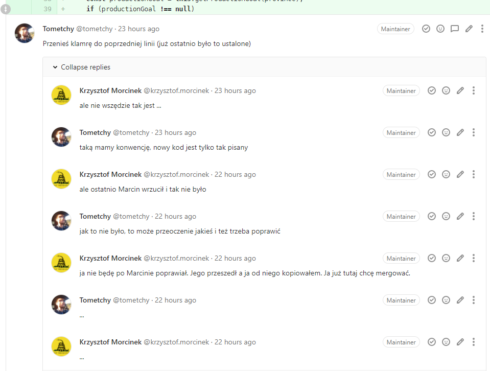
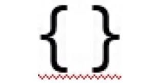
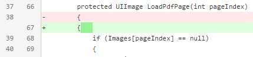
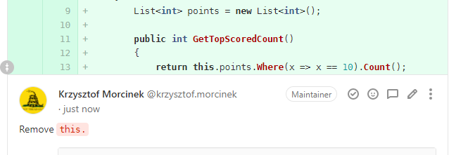

Różne style prowadzenia Code Review w twoim zespole
Praktycznie w każdym nowym zespole, w którym jestem Code Review wygląda zupełnie inaczej. Czego naprawdę oczekujemy od Code Review, jak bardzo ostrym lub pobłażliwym należy być i jak ładnie to wpiąć w Continous Integration.
Krzysztof Morcinek

- @ Pragmatic Coders
- 10 years in .NET stacks
- Last year in JAVA
- krzysztofmorcinek.wordpress.com
- Screencast: Show me the code
GitWarsztaty w Twojej firmie

Mój kontekst
it's better to ask forgiveness than permission
projekty gdzie dostarcza się business value, a nie security critical - różne części kodu będą miały różne wymagania w Code Review
zespoły same się organizują
Po co robimy Code Review?
... pomysły ?
Szybsze / stabilniejsze dodawanie business value
Osiągamy cele biznesowe poprzez
Spójny design
Spójne standardy
Minimalizacja bugów
Dzielenie się wiedzą
Inne wymienione
Różne rodzaje Code Review (procesowo)

Lokalnie (jako jedyne) bo SVN i brak Merge Requestów
Przez tydzień commitowałem w SVN'ie
Usiadł ze mną architekt i miał wypisane uwagi i przeszliśmy przez nie
- od razu można rozwiać wątpliwości
- nie wszyscy widzą (można nie być otwartym na krytykę)
Poprawiałem
Ustalona hierarchia
wiadomo kto ma przejrzeć (approve dać) a kto się uczy
wyszukanie problemów
miałem niedosyt gdy ktoś stwierdzał że "good enough"
wtedy mnie męczyło, że ja nie mogę robić CR komuś, tylko mi robią
Każdy może przeglądać, trzeba zebrać ileś okejek (approve)
Trzeba było mieć min 2 okejki w tym jedną od seniora
Każdy może przeglądać
nie ma nic wymuszonego, process jest lekki
bez CR też przejdzie
Kiedy odpuścić CR
- jakiś projekt na wymarciu gdzie nie chcemy inwestować swojego czasu
- 1 osoba w nowym projekcie i nikt nie kwapi się do przeglądania
- 2 osoby które ze sobą rozmawiają
- olbrzymi rename - nikt nie chce tego przeglądać
- olbrzymi rename i gdzieś logika się zmieniła
-

Ryzyko
zawsze się czeka
można ugrząźć
nie dostaje się jasnych wytycznych co zrobić
dostaje się sprzeczne pomysły (a coś trzeba wybrać)
(czas)
Jak unikać flame wars

Flame wars (tabs vs spaces)

Wy sami wiecie co odpuścić. Zachęcam żeby czasem odpuszczać.
Automatyzacja Code Review
Stylecop (prettier.io, checkstyle)


Stylecop cd.

PrefixLocalCallsWithThis - przykład że coś trzeba wybrać i się stosować.
... w dowolną stronę (z thisem, albo bez thisa)
Uniwersalne narzędzie do formatowania
Kolega ustawił indentation na 2 spacje - nigdy w życiu nie miałem takiego ustawienia. Ale dzięki temu że jest to wymuszone to nie narzekam i się przyzwyczaiłem. https://gitlab.com/krzysztof.morcinek/conqueror-browser-spy/-/commit/b1a9449d2bacbbd050076591239e7da91fa88ec7
Testy konwencji
3 kawałki:
- pętla po wszystkich plikach w projekcie
- szukanie problemów w jednym pliku
- odpalenie tych testów podczas buildu
Przykład: wymóg aby wszystkie kolekcje były niemutowalne w C# (IReadOnlyCollection<>)
Pomocne przy wrzucaniu nowego CR
GIT - oczyszczenie commitu przed wypushowaniem
- Fix typo
- Poprawa formatowania
- Zmiana namespace'u / folderu / pakietu
- DEMO czyszczenia przed CR

Mam tego fixa na moim branchu
Ktoś znalazł buga i go poprawił, ale czeka z tym na CR całego taska którego robił ...
... w międzyczasie ktoś inny trafia na ten sam bug i:
- Traci czas bo bug wydłuża mu development jego ficzera
- Traci czas debugując o co chodzi
- Traci czas fixując
Takie rzeczy od razu na mastera
Inne przykłady gdy komuś nasz fix może pomóc już! zamiast za 3 dni
Poprawka literówki w komentarzu - ktoś szukając znajdzie
Napisane fabryki do obiektów używanych do testowania - ktoś już może z nich skorzysta
Przykład ustanawiania nowych standardów

Flow Code Review DEMO
Gitlab
Gitlab pipelines
Slack
Rozpisane kroki z demo
- przygotowany commit z brancha feature/3/add-board
- zrób squash
- nowy branch 'feature/3/add-board-2'
- stwórz MR
- poczekaj aż przejdzie
- wyślij na slacka z @here
- cierpliwie czekamy i bierzemy się za coś innego.
- dostać feedback do poprawy. // "there is type/enum for that"
- opcje na gitlabie squash i FFonly
Dodatkowe informacje pomagające zrobić dobre Code Review
Napisz czego oczekujesz po tym Code Review
Sam skomentuj miejsca gdzie będą pytania i wyjaśnij
Różne rodzaje Code Review (stopień formalizacji)
Ciężkie procesy
Wymagania odnośnie kto ma przeglądać i kto ma akceptować
Wymagania odnośnie rozwiązywania komentarzy
Lekkie procesy
Bardziej trzeba się starać, żeby ktoś przejrzał i przyłożyć do wystawienia CR
Nie ma przymusu rozwiazywać wszystko dokładnie, często ludzie piszą że to jest wskazówka, ale rób jak chcesz
Dziękuję za uwagę
Życzę wszystkim, najmniej stresów i najwięcej automatyzacji podczas Code Review